От первого громкого тезиса
до тотального недоверия
Почему мы доверяем формулировкам «учёные доказали» и «исследование показало» без проверки источника?
Как отличить реальный научный вывод от упрощения, некорректной интерпретации или манипуляции?
Какие шаги помогут самостоятельно проверить научный аргумент — от вирусного поста до первоисточника?
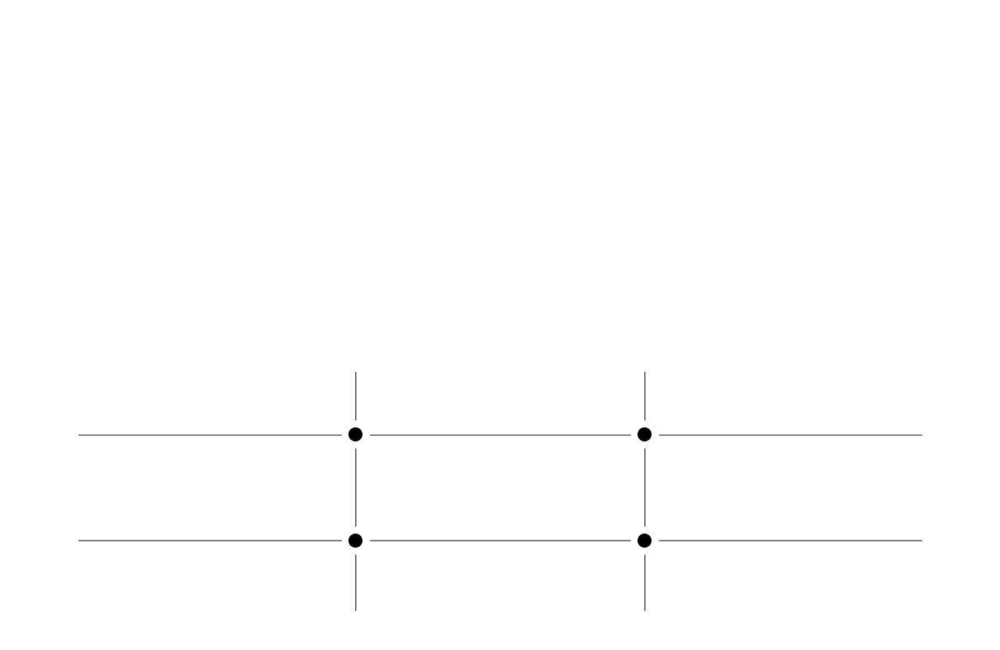
Не спешите верить заголовку, задайтесь вопросом
Учёные доказали
или нам так сказали?
Ориентироваться в информации важно каждому, но не у каждого есть время и подготовка, чтобы читать первоисточники.
Не обязательно читать научные статьи и разбираться в методологиях самостоятельно. Достаточно понять, можно ли доверять выводу — и насколько.
Одно слово может превратить осторожный вывод в сенсацию. Проверка возвращает утверждению его настоящий контекст
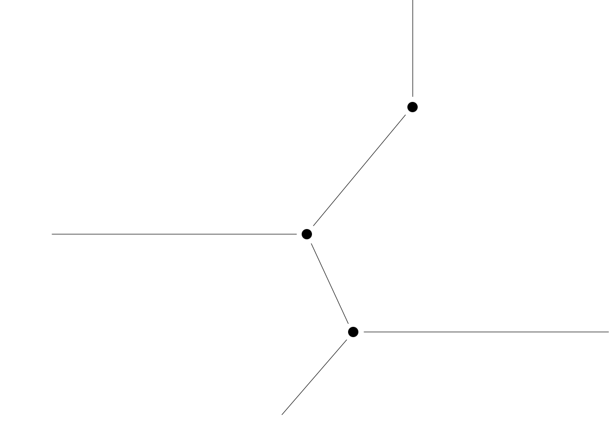
Каждый день мы видим десятки «научных» новостей. Проверка нужна не для того, чтобы сомневаться во всём, а чтобы понимать, на что действительно стоит обратить внимание.
Отсекайте кликбейт, домыслы и выводы, которых нет в источнике.
Вместо сложного исследования — короткий вывод: что известно, что пока не доказано и где заканчиваются факты.
Громкие слова вроде «учёные доказали» перестают работать как безусловный аргумент.
Не нужно искать первоисточники, сравнивать публикации и расшифровывать научный язык вручную.
Проверка помогает не менять привычки, планы или мнение из-за громкого, но недоказанного заголовка.
Неточный заголовок — не повод отрицать исследования. Это повод увидеть, что именно учёные действительно выяснили.
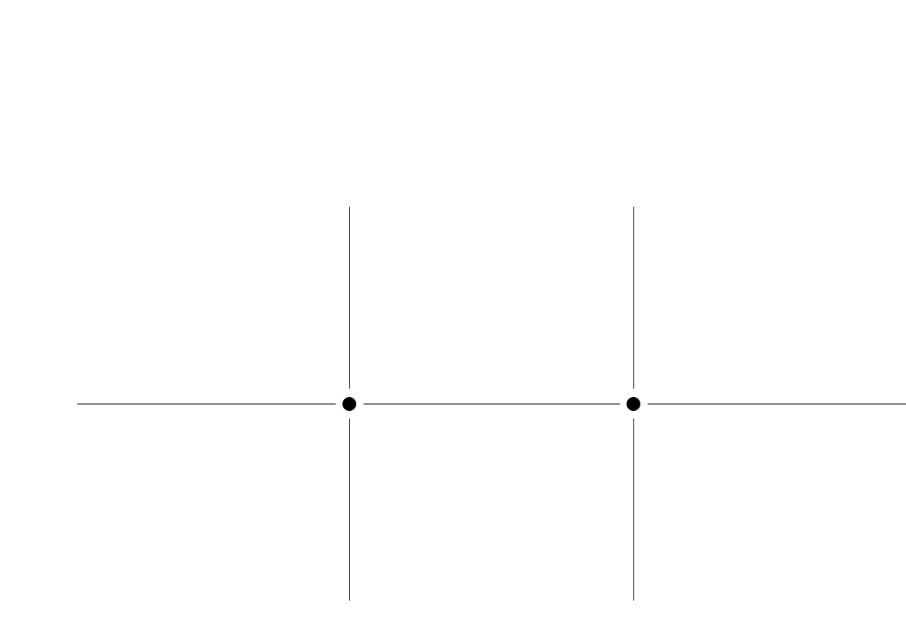
Если научный тезис может убедить,
он может и ввести в заблуждение
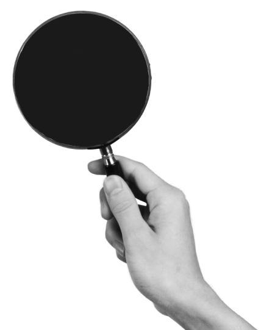
Если человек поверит «научно доказанному» методу лечения, то это может привести к отказу от реальной медицины в пользу исследования из блога
Если новость о «опасном» продукте или вирусе разлетится быстрее опровержения, то это может спровоцировать панику, скупку и реальный ущерб
Если фейк с формулировкой «исследование показало» наберёт охваты, то это может превратить выдумку в «общеизвестный факт»
Если громкое «исследование» появляется накануне важного решения, то это может продавить нужную точку зрения миллионам людей
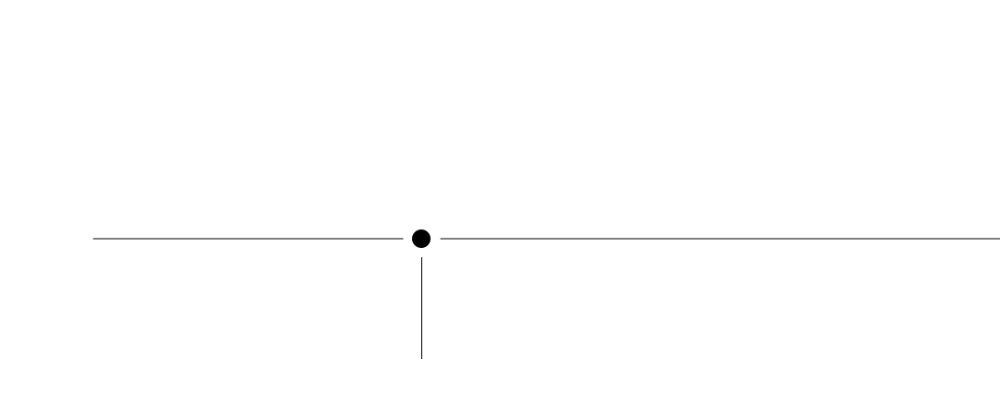
«Учёные доказали» — самая убедительная фраза в интернете, и самая удобная для манипуляций.
Мы верим исследованиям, экспертам и сложным словам, Но за научным аргументом может скрываться всё что угодно: несуществующая статья, маленькая выборка, вывод, которого учёные никогда не делали.
«Учёные» / кто именно?
«доказали» / каким исследованием?
«меняет жизнь» / вывод статьи/
автора поста?
Учёные доказали: [Негативные мысли приводят к деменции]
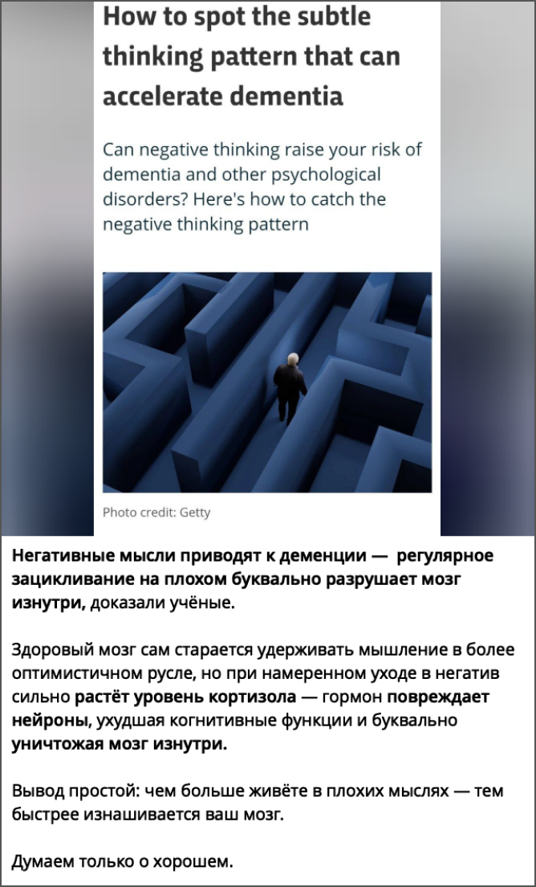
разбор поста из медиа:
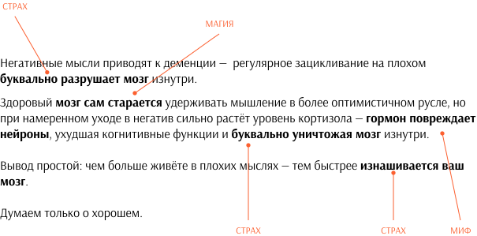
Статья 2020 года
How to spot the subtle thinking pattern that can accelerate dementia
BBC Science Focus Magazine · научно-популярная статья
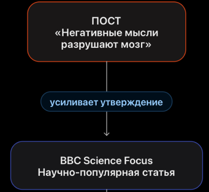
«Негативные мысли буквально разрушают мозг изнутри»
BBC Science Focus рассказывает о связи
повторяющегося негативного мышления
с риском деменции и предполагает,
что оно может ускорять развитие заболевания.
«Повторяющееся негативное мышление» превращается в любые плохие мысли.
«Может быть связано с риском» превращается в «приводит к деменции».
Предположение о влиянии на мозг становится утверждением о его буквальном
разрушении. Добавляется категоричный совет: «Думаем только о хорошем».
Статья 2020 года
How to spot the subtle thinking pattern that can accelerate dementia
BBC Science Focus Magazine · научно-популярная статья
строится на результатах исследования
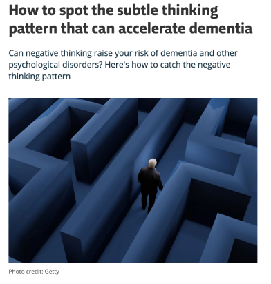
Нельзя заключить, что негативное мышление вызывает деменцию или что отказ от негативных мыслей предотвращает её развитие.
В работе 2020 года обнаружены статистические связи с когнитивным снижением и некоторыми биомаркерами болезни Альцгеймера.
Причинность не установлена.
Статья рассказывает о научной гипотезе, связанной с повторяющимся негативным мышлением, но подводит читателя к более уверенному выводу о возможном ускорении деменции.
Выводы искажены и преувеличены
Научный заголовок — не всегда научный факт. Используйте этот список, чтобы отделять реальные выводы исследований от преувеличений, рекламы и личных интерпретаций.
«
Где опубликовано исследование?
Есть ли ссылка на научную статью, автора или организацию?
Надёжная новость должна вести к конкретному источнику: статье, отчёту, данным исследования. Формулировка «британские учёные выяснили» без имён, ссылок и деталей — не доказательство.
«
Кто авторы работы?
В какой области они специализируются?
Есть ли у них или у заказчика исследования финансовая заинтересованность?
Учёные — не единая группа с общим мнением.
Важно понимать, кто сделал вывод, в какой области он специализируется и нет ли у него финансового интереса в результате.
«
Сколько участников было в исследовании?
Кого именно изучали: людей, животных, клетки? Можно ли перенести вывод на всех?
Выводы маленького эксперимента или работы на животных могут быть перспективными, но ещё не означают, что эффект подтверждён для большинства людей.
«
Когда опубликована работа?
Не опровергли ли её более поздние данные?
Не вырван ли вывод из контекста?
Наука развивается: старые выводы могут уточняться или пересматриваться. Кроме того, заголовок часто упрощает исследование и не рассказывает об ограничениях, условиях и исключениях.
«
В статье сказано «связано с», «может влиять» или «точно вызывает»?
Не стал ли заголовок категоричнее самого исследования?
Научный язык обычно осторожен: «предполагается», «обнаружена связь», «требуются дополнительные данные». Если в новости всё «точно лечит», «гарантированно вызывает» или «окончательно доказано», это повод перепроверить материал.
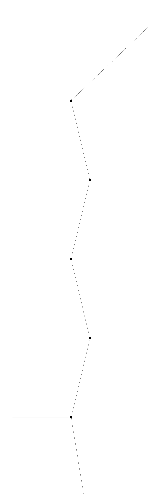
Оценивайте доказательства,
а не громкость заявления
Когда-то слово «наука» требовало доказательств.
Сегодня оно их заменяет.
«Учёные доказали» — и критическое мышление отключается: спорить с наукой неудобно, а проверять некогда. Этим зазором между доверием и проверкой пользуются все, кому нужно убедить.
Итог — информационная среда, где факт и манипуляция звучат одинаково убедительно. Проигрывает тот, кто не задал ни одного вопроса.
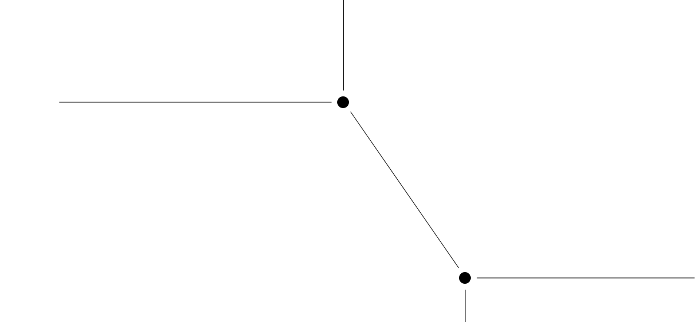